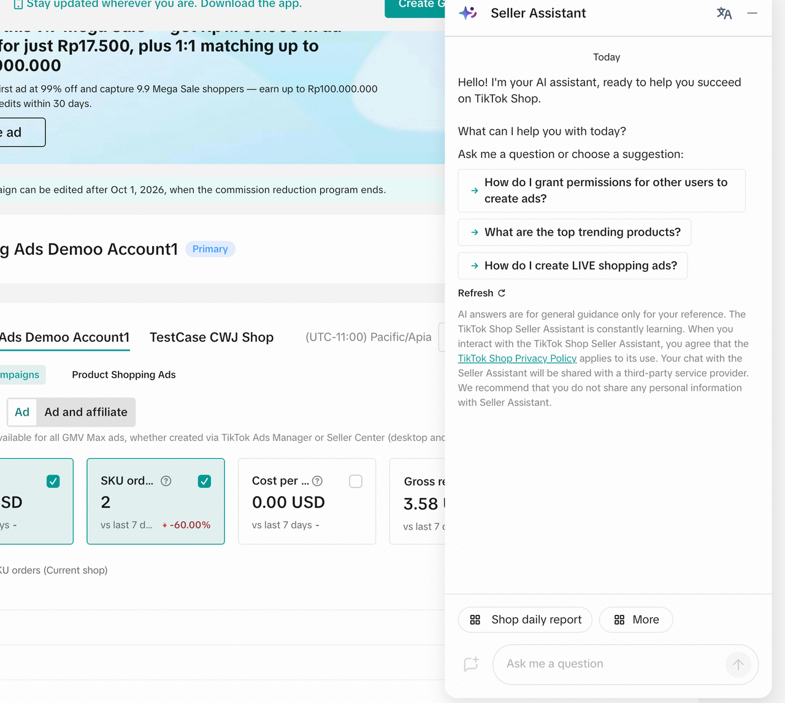
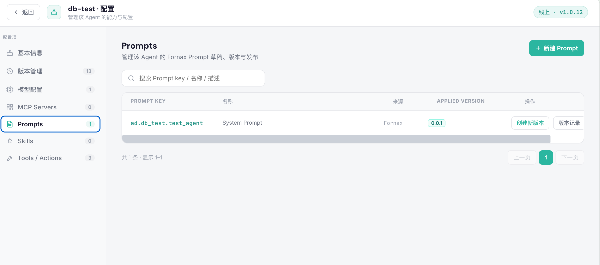
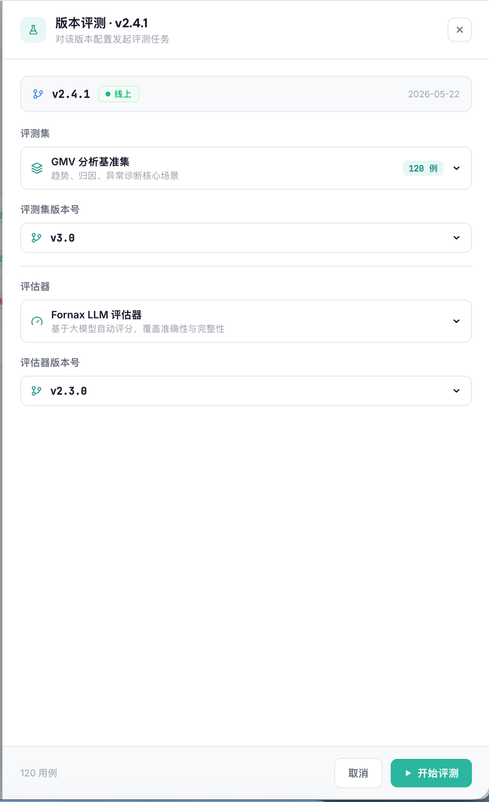

案例一 · 复杂业务的智能诊断
把多系统排查，
变成即时、可解释的诊断
面对复杂状态、分散数据和重复咨询，AI 可以汇总上下文、解释问题原因，并给出下一步建议。
业务挑战
人工排查依赖经验，响应慢，问题解释不透明。
交付价值
更快定位问题，减少重复劳动，提升业务透明度。
 已脱敏的真实交付界面
已脱敏的真实交付界面07 / 11
从业务问题出发，完成场景识别、价值验证、应用交付与持续运营
“不是多一个工具，而是让团队拥有一项能持续运转的业务能力。”
真正卡住企业的，不是模型能力本身，而是从“能演示”走到“能运行、能复制、能持续产生价值”。
不知道哪些问题真正值得投入，缺少清晰的业务目标与 ROI 判断。
Demo 容易，接入真实数据、系统、权限和业务流程很难。
一个 PoC 跑通，不代表能稳定运行，更不代表能复制到整个组织。
AI 上线后，人、流程、岗位与管理机制没有同步改变，价值难以持续。
企业真正缺的，不是又一个 AI 工具，而是把 AI 嵌入真实业务、持续产生价值的能力。
知识分散、服务重复、决策慢、流程协同成本高、问题排查依赖经验。
围绕真实岗位与流程设计，明确业务边界、人工协作、验收标准和运营机制。
从经营目标和岗位痛点中找到高价值场景。
让 AI 与现有人员、系统和流程协同工作。
通过效果复盘和迭代优化，让价值长期发生。
从场景诊断开始，到应用上线和持续运营结束；每一阶段都对应明确的业务产出。
制度、产品、行业资料的可信问答；文档处理与团队知识沉淀。
客户咨询、销售辅助、方案生成、服务流程与跟进协同。
经营数据分析、异常诊断、业务排查与风险辅助决策。
优先从业务影响大、边界清晰、可验证的场景开始：用一个试点建立组织共识，再逐步复制到更多岗位与流程。
直接关系效率、成本、增长或风险。
明确数据、权限、规则与人工确认点。
上线前就定义质量、时效与覆盖口径。
共同确定业务目标、优先级与验收口径。
参与 Workshop、试用反馈与上线后的使用导入。
围绕系统、数据、流程与运营问题持续协同。
是否能降低成本、提升效率、促进增长或降低风险。
是否具备数据、流程、规则、系统和责任边界。
关键角色是否愿意参与，是否具备上线后的使用条件。
质量、时效、覆盖率与人工介入率如何衡量。
AI 负责识别、分析、解释与建议；企业的规则、权限、人工确认与审计机制共同保障真实业务执行。
从一个可验证场景开始，跑通价值、流程与组织协作，再逐步复制。
面对复杂状态、分散数据和重复咨询，AI 可以汇总上下文、解释问题原因，并给出下一步建议。
人工排查依赖经验，响应慢，问题解释不透明。
更快定位问题，减少重复劳动，提升业务透明度。
已脱敏的真实交付界面在既有业务界面中提供即时问答、规则解释和操作引导，帮助客户与一线人员更快完成下一步工作。
提出问题、获取建议、继续在原有业务界面完成操作。
提升服务体验，降低理解与沟通成本，促进自助解决问题。

已脱敏的真实交付界面当 AI 场景逐步增加，企业需要统一管理应用能力、版本配置、权限边界和问题处理，而不是让每个应用各自运行。

已脱敏的统一运营界面通过版本管理、问题复现、效果评测和运营复盘，让每一次优化都有依据，并持续提升业务应用质量。

已脱敏的评测与优化界面我们帮助企业把 AI 从一次试点，做成可以进入真实业务、能够持续优化的长期能力。
业务访谈
场景评估
试点设计与价值验证
上线运营与持续优化
预约一次业务场景访谈
识别优先场景并讨论试点边界